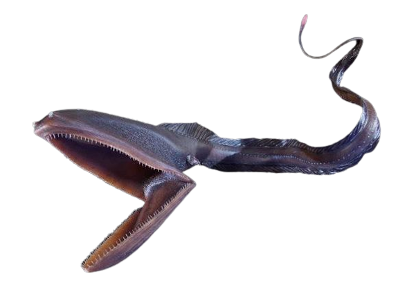

FERAS DO OCEANO
O Tubarão Branco: (Carcharodon carcharias) é uma das espécies mais
famosas a habitar os oceanos ao redor do globo, e povoa o imaginário popular devido à sua retratação em várias obras cinematográficas,dentre as quais ‘Tubarão’, dirigida
por Steven Spielberg, é a mais célebre.Este animal apresenta corpo em formato de torpedo, que facilita sua natação, e pode atingir até 6,5 metros de comprimento,
pesando cerca de 3,4 toneladas. Entre suas características morfológicas está o focinho pontiagudo, grandes nadadeiras peitorais, uma nadadeira dorsal triangular
relativamente alta e nadadeira caudal homocerca.
As nadadeiras, inclusive, atuam como importantes propulsores destes animais, que podem alcançar uma velocidade de até 24km/h.
Clique no Tubarão Branco para conhecer mais sobre essa espécie incrível.
Baleia Orca: Espécie de cetáceo da subordem Odontoceti,
as orcas podem alcançar até 10 metros de comprimento, pesando até 9 toneladas. Os machos são maiores em comprimento e peso do que as fêmeas, de acordo com o dimorfismo sexual da espécie,
que também é refletido pelo formato da nadadeira dorsal: triangular nos machos e curvada nas fêmeas e imaturos. A coloração das orcas é uma de suas características mais marcantes, e apresenta
um padrão bem definido: o preto predomina no dorso da espécie, que apresenta apenas uma mancha branca acima dos olhos e atrás da nadadeira dorsal (a qual permite a identificação de cada indivíduo),
enquanto que a região ventral e a face inferior de sua cauda são brancas. Duas manchas brancas também podem ser observadas estendendo-se da região ventral para as laterais de seu corpo, em direção
ao dorso. Nos filhotes, todas as áreas brancas apresentam coloração alaranjada.
Clique na Baleia Orca para conhecer mais sobre essa espécie incrível.
Tubarão Duende: Habitante de águas profundas e raramente
visto com vida, o tubarão-duende é um dos tubarões mais antigos do mundo, parecendo até ser um animal saído de alguma era mitológica. Podendo medir até 4 metros de comprimento, ele possui um
focinho achatado, corpo rosado e uma mandíbula repleta de dentes bem afiados, muito parecidos com pregos, e que se projeta para frente quando o tubarão ataca uma presa.O tubarão-duende se
alimenta de lula, polvos, camarões e outros moluscos que habitam o fundo oceânico, sendo registradas aparições dessa espécie nas costas das ilhas japonesas, Austrália e África do Sul.
Clique no Tubarão Duende para conhecer mais sobre essa espécie incrível.
O tubarão-boca-grande (Megachasma pelagios) é uma das espécies
mais raras e menos conhecidas do mundo. Desde que foi descoberto em 1976, apenas 117 avistamentos foram relatados e a maioria deles é de organismos encalhados na praia ou de pescas acidentais.
Uma das principais características é a sua boca gigante, por isso é chamado de “tubarão-boca-grande”. Esse peixe cartilaginoso é um parente próximo do tubarão-baleia, por isso é bastante vistoso
em tamanho, mas não é uma espécie perigosa. Se você quiser saber mais sobre esse organismo, continue lendo.
Clique no Tubarão Boca-Grande para conhecer mais sobre essa espécie incrível.

O Tubarão-Cobra (Chlamydoselachus anguineus) é estranho, de
aparência pré-histórica. O animal vive em mar aberto e passa a maior parte do tempo em águas profundas e escuras muito abaixo da superfície. O corpo longo e cilíndrico atinge comprimento de
quase 2 m, enquanto, as barbatanas ficam na parte final. Segundo a Oceana, ‘tubarões-cobra são predadores ativos, podem atacar presas em potencial engolindo-as inteiras, mesmo as grandes.
Já, o estilo normal de natação se parece ao da enguia. Nadam em forma serpentina.
Clique no Tubarão-Cobra para conhecer mais sobre essa espécie incrível.
Peixe Olho-de-barril, ou barreleye (Macropinna microstoma):
O nome deriva do formato tubular dos olhos, lembrando um barril. E é sobretudo considerado pelos biólogos um dos grupos de peixes mais peculiares e desconhecidos do reino pelágico (fundo do mar).
Pudera, antes de mais nada, sua cabeça é transparente permitindo ver os órgãos internos. De acordo com o earthlymission.com, esta é uma configuração única. E desde sempre provocou curiosidade.
Clique no Peixe Olho-de-Barril para conhecer mais sobre essa espécie incrível.
As Lulas Gigantes são realmente difíceis de estudar, como vivem nas
profundezas do mar. Muita da informação tem sido reunida a partir de animais que foram arrastados para as praias ou capturados em redes de pesca, explica a “Science Focus”. Mais recentemente, acrescenta
o site, a 16 de Agosto de 2022, uma lula-gigante foi lançada na praia de Scarborough, no Cabo Ocidental da África do Sul. Media mais de quatro metros, embora os enormes invertebrados possam atingir um
comprimento até três vezes superior. Peritos do Museu Iziko recolheram amostras da lula para um estudo mais aprofundado. “Embora as técnicas modernas que utilizam câmaras fotográficas de alto mar nos
tenham permitido capturá-las em filme umas tantas vezes, ainda há muito que não compreendemos totalmente sobre o seu estilo de vida e comportamento”, sublinha a “Science Focus”.
Clique na Lula Gigante para conhecer mais sobre essa espécie incrível.

A enguia-pelicano (Eurypharynx pelecanoides) tem uma distribuição muito extensa.
Ocorre em oceanos temperados e tropicais em todo o mundo e ocupa uma ampla gama de profundidades. Pode ser encontrada de 500 a 7625 metros de profundidade, embora seja mais frequente entre 1200 e 1400 metros. Esses peixes quase nunca são
observados com vida, pois explorar seus ecossistemas é muito difícil para o ser humano. Embora às vezes sejam arrastados para a superfície por redes de pesca, seus corpos são frágeis e se deterioram com a mudança de pressão durante a subida.
Portanto, os espécimes pescados já estão bem alterados. As enguias-pelicano parecem medir entre 50 centímetros e 1 metro. Seu corpo é simples, achatado lateralmente e totalmente preto.
Clique no Peixe Pelicano para conhecer mais sobre essa espécie incrível.
O Peixe-Diabo (Melanocetus spp.) é um animal que vive em condições extremas.
É encontrado nas regiões mais profundas dos oceanos, as chamadas regiões abissais. Ele ficou conhecido por ter aparecido no filme "Procurando Nemo", no qual persegue os protagonistas com seus enormes dentes.
As fêmeas desse animal são maiores e têm, em média, 18 cm, enquanto os machos apresentam, em média, apenas 3 cm em sua forma adulta. Devido a esse imenso dimorfismo sexual e pela escassez de alimento nas profundezas, os machos, quando
encontram uma fêmea, mordem suas ‘barrigas’ e passam a viver como parasitos (extraindo os nutrientes que necessitam), estratégia evolutiva para a reprodução da espécie.
Clique no Peixe-Diabo-Negro para conhecer mais sobre essa espécie incrível.